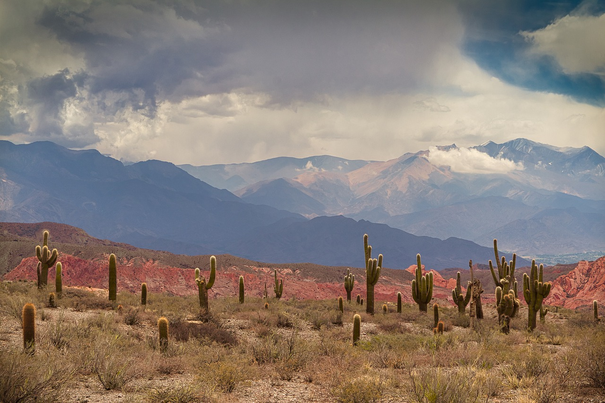

Somos una Asociacion sin fines de lucro que busca promover la competencia sana, actividades recreativas y ser un espacio social de entretenimiento para las familias.
Ver masNuestra actividad fundamental es la de promover y fomentar por medio del deporte a las personas a distenderse y a mejorar su calidad de vida.Funcionamos como estado de contencion a hacia los niños que vienen a nuestro predio. Nuestro objetivo es siempre inculcar los valores de vida, que son el respeto, humildad y ser solidario con el otro.Por ultimo quedan invitados a acercarse aquellos que quieran pertencer a nuestra Asociación y a personas que sean nativos de la puna jujeña, a entrar a los distintos campeonatos de futbol masculino y femenino que se hacen anualmente.
Desde nuestro lugar promovemos las actividades deportivas tanto para niños, jovenes y veteranos. Anualmente se realizan torneos de futbol masculino , femenino , como asi también para las personas adultas modalidad veteranos. Nuestra asociación cuenta con alrededor de 1000 personas (socios y no socios) que ingresan a diario a hacer alguna actividad ,pasar el día y compartir un buen rato en familia.
Diferentes equipos representando a los pueblos de la puna jujeña disputan partidos todos los domingos, se llevan a cabo torneos anuales como relampagos.
Ver mas
Torneo anual de futbol femenino , en donde participan mujeres de todas las edades con ganas de divertirse y enfrentarse dentro de un campeonato muy competitivo.
Ver masLos jóvenes son el futuro y la prioridad para cualquier asociación que quiera que su comunidad siga creciendo con el tiempo, por esta razón capacitamos a niños y niñas a disfrutar de este hermoso deporte que es el futbol.
Ver masFiestas, celebraciones, y fechas tradicionales se llevan a cabo todos los años en nuestra asociación. Desde artistas invitados reconocidos a grupos del ámbito local.
Ver masRedes sociales: @AsociaciondeportivadelaPunaJujeñaenBsAs.
Dirección: El hornero / El curro, ruta 21, La Matanza, Buenos Aires.